Sau nước, thực phẩm là một nhu cầu tối cần thiết của con người, nếu thiếu thực phẩm, chúng ta sẽ suy kiệt sinh lực và sức chịu đựng, tinh thần hoang mang mơ hồ, không còn ý chí, nghị lực để phấn đấu… sinh mạng sẽ bị đe doạ.
Nhưng để tìm kiếm được thực phẩm từ thiên nhiên hoang dã, các bạn phải là người có kinh nghiệm. Tuy thiên nhiên thật hào phóng, nhưng cũng rất khắc nghiệt. Bên cạnh những thực vật, động vật có thể nuôi sống được con người, thì cũng có những cây trái và sinh vật có thể giết chết con người trong nháy mắt. Đã vậy, sự khác biệt giữa “lành” và “độc”, lại không sai biệt nhau là bao nhiêu, nhất là ở trong các loài thực vật. Thí dụ: Cây “Chè vằng” ăn được lại rất giống cây “Lá ngón” cực độc, chỉ cần ăn vài lá là vô phương cứu chữa. Hoặc giữa cây khoai môn và cây môn nước, một loại thì ăn rất ngon, còn một loại ăn vào thì ngứa như cào cổ. Những cây nầy, chỉ có người kinh nghiệm mới phân biệt được.
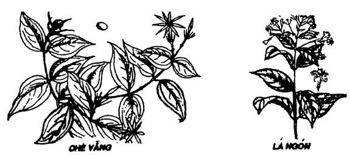
Nói như thế không có nghĩa là bạn khoanh tay nhịn đói chờ chết, chúng tôi chỉ muốn nói là các bạn hãy thận trọng, nên ăn những gì mà các bạn biết rõ, cả về tính chất lẫn cách chế biến (chẳng hạn như củ nần, củ nâu, thì phải ngâm nước và luộc nhiều lần. Củ nưa phỉa luộc với vôi. Măng tre thì phải luộc hay nấu, không thể nướng hay ăn sống được…)
Về động vật, tuy ít có con mang chất độc trong thịt, nhưng nếu các bạn không biết cách làm và chế biến, thì cũng có thể trúng độc. Nhiều người đã chết do ăn Cóc và cá Nóc làm không kỹ. Các bạn không nên ăn những lòng, ruột, trứng.. của các loại cá và động vật mình không biết rõ, và cũng đừng đụng tới những sinh vật và côn trùng hay nấm có màu sắc sặc sỡ, vì đó là lời cảnh cáo của thiên nhiên.
Để tìm thực phẩm từ trong thiên nhiên, chúng ta có 2 nguồn chính: từ THỰC VẬT và từ ĐỘNG VẬT.
THỰC PHẨM TỪ THỰC VẬT.
Đây là một nguồn thực phẩm phong phú và đa dạng, dễ tìm kiếm, rất thích hợp cho những trường hợp phải di chuyển. Tuy nhiên, cũng rất dễ bị ngộ độc, các bạn phải cẩn thận.
Thường thì cây, trái, củ, hạt, mầm… nào mà chim, thú (nhất là khỉ) mà ăn được thì chúng ta cũng có thể ăn được. Nhưng đó không phải là công thức, vì một số loài chim có thể ăn những trái độc (Mã tiền, Mặt quỷ…) mà nếu các bạn ăn vô thì chắc chắn “ngủm”.
Nếu nghi ngờ thì các bạn có thể thử bằng những cách sau đây:
- Ngắt một đọt cây, cuống lá, mà thấy nhựa trắng như sữa thì đừng ăn.
- Nhai thử, thấy có vị đắng, cay, hay buồn nôn, thì đừng ăn.
- Nấu lên trong 15 – 20 phút, bỏ vào miệng ngậm một lúc, nếu thấy không có phản ứng gì thì từ từ ăn thêm, nhưng đừng quá nhiều, cho đến khi hoàn toàn tin tưởng.
Trong sự hạn chế của một chương sách cũng như về khả năng, chúng tôi không thể trình bày được hết tất cả các loại cây trái có thể dùng làm thực phẩm. Chúng tôi cũng không đề cập đến các loại cây đã được thuần hoá từ lâu và được trồng khắp nơi như: lúa, bắp, đậu, mè… khoai lang, khoai tây, khoai mì… cam, quýt, xoài, ổi, mít, mận… mà chúng tôi thiên về những cây mọc hoang, hoặc đang được thuần hoá. Nhất là ở Việt Nam và các nước lân cận.
NHỮNG CÂY HOANG DÃ DÙNG LÀM THỰC PHẨM
KHOAI MÀI – HOÀI SƠN – SƠN DƯỢC
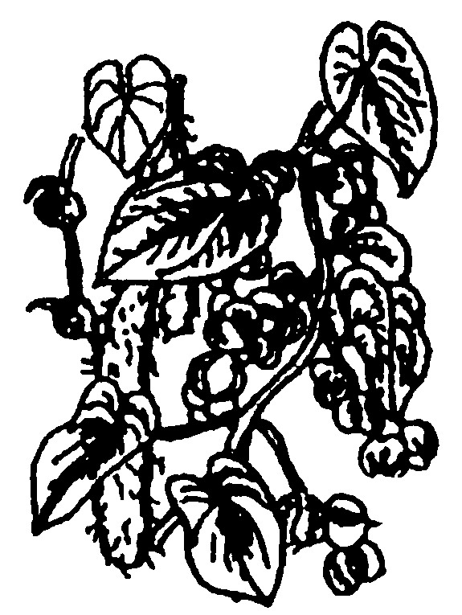
Nơi mọc: Ở khắp vùng rừng núi nước ta.
Thân cây: Dây leo bò trên mặt đất
Lá: Lá đơn, hình tim, mọc đối hay so le
Hoa: Hoa đực, hoa cái khác gốc
Quả: Củ con ở nách lá gọi là “thiên hoài” hay “dái củ mài”
Phần làm thực phẩm: Củ (có thể dài 1 mét)
Chế biến: Luộc hay nạo, giã để nấu canh
Mùi vị: Thơm, bùi.
SẮN DÂY – CÁT CĂN – CAM CÁT CĂN
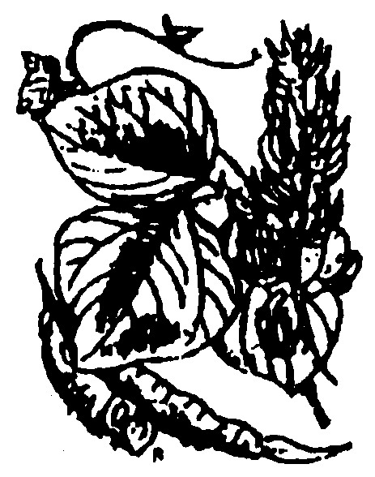
Nơi mọc: Mọc hoang và được trồng khắp nơi
Lá: Lá kép gồm 3 lá chét hình trứng
Hoa: Màu xanh, mọc thành chùm ở kẽ lá
Quả: Dài 9 – 10 cm, vàng nhạt, nhiều lông
Phần làm thực phẩm: Củ
Chế biến: Luộc, chế thành bột
Mùi vị: Bùi, ngọt
HOÀNG TINH – CỦ CÂY CƠM NẾP
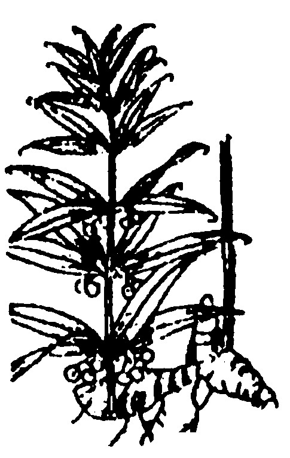
Nơi mọc: Mọc hoang ở những nơi rừng ẩm
Thân cây: Cây loại cỏ sống lâu năm
Lá: Hình mác, mọc vòng 4 – 5 lá một
Hoa: Mọc ở kẽ lá, rũ xuống, mỗi cuống mang 2 hoa hình ống, màu tím đỏ.
Quả: Quả mọng, khi chín có màu tím đen
Phần làm thực phẩm: Củ
Chế biến: Luộc hay giã làm bột
KHOAI NƯA – KHOAI NA
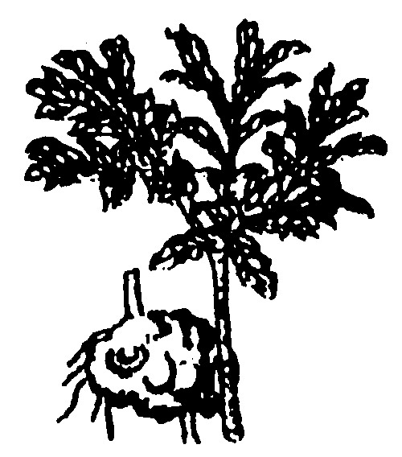
Nơi mọc: Mọc hoang ở những nơi ẩm ướt
Thân cây: Cây sống lâu năm
Lá: Lá đơn, có cuống dài, màu xanh lục nâu, có đốm trắng, phiến lá khía nhiều và sâu
Hoa: Bông mo tận cùng bằng một phần bất thụ, hình trụ, màu tím (mo màu nâu sẩm)
Phần làm thực phẩm: Củ
Chế biến: Luộc với vôi cho hết ngứa
CỦ NÂU – KHOAI LENG
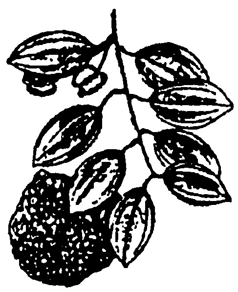
Nơi mọc: Mọc hoang tại các vùng rừng núi
Thân cây: Dây leo thân nhẵn, gốc nhiều gai
Lá: Hình trứng hơi mác, mọc cách ở gốc, mọc đối ở ngọn
Hoa: Mọc thành bông
Phần làm thực phẩm: Củ
Chế biến: Luộc nhiều nước.
KHOAI MÔN – KHOAI SỌ
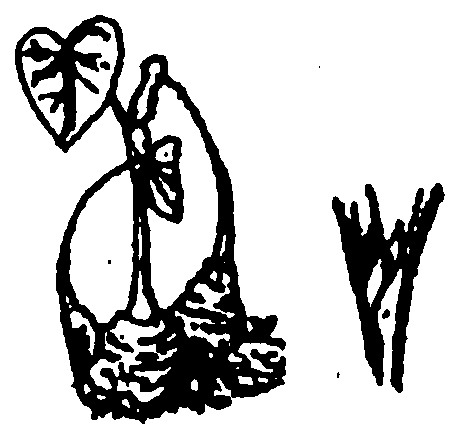
Lá: Hình tim, có cuống dài, không ướt
Hoa: Bông màu trắng, hoa bất thụ vàng
Phần làm thực phẩm: Thân hoá củ
Chế biến: Luộc
CỦ CHUỐI – CHUỐI HOA
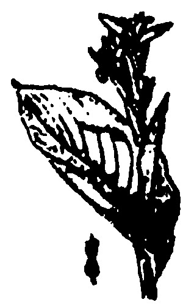
Nơi mọc: Mọc hoang, trồng làm cảnh, thích nơi ẩm.
Thân cây: Thân thảo, đa niên, cao khoảng 1m50.
Lá: To, tròn hơi mác, mọc cách, màu lục, trơn láng
Hoa: Xếp thành chùm, có một cái mo chung
Quả: Quả nang có nhiều gai mềm như lông
Phần làm thực phẩm: Củ
Chế biến: Luộc – giã làm bột
CỦ NĂN – MÃ THẦY
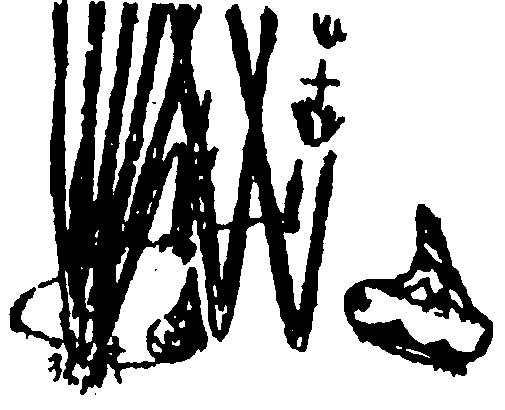
Nơi mọc: Mọc hoang và được trồng ở nơi ngập nước.
Cây cỏ củ to, mọc ở dưới nước. Thân không có lá, tròn dài, gần như chia đốt, phía trong có nhiều vách ngang. Hoa tự chỉ gồm có một bông nhỏ màu vàng nâu ở ngọn, hoặc không có hoa.
Phần làm thực phẩm: Củ
Chế biến: Ăn sống, nấu với thịt, nấu chè
CỦ ẤU - ẤU NƯỚC – KỴ THỰC
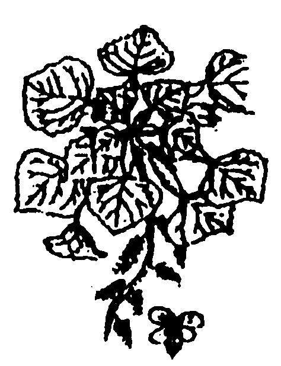
Nơi mọc: Mọc hoang và được trồng ở các ao đầm
Thân cây: Thân ngắn, có lông
Lá: Lá nổi có phao: ở cuống, hình quả trám
Hoa: Hoa trắng, mọc đơn độc hay ở kẽ lá
Quả: Thường gọi là “củ”, có hai sừng
Phần làm thực phẩm: Quả (củ)
Chế biến: Luộc hay giã bột làm bánh.
TRẠCH TẢ - MÃ ĐỀ NƯỚC
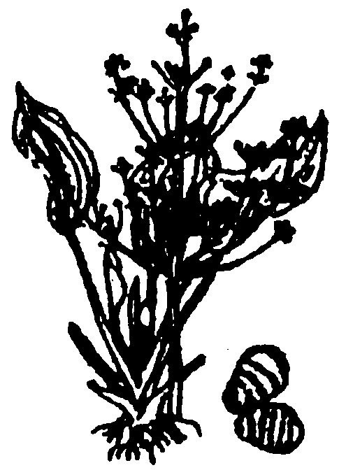
Nơi mọc: Mọc hoang ở ao, đầm, ruộng nước
Thân cây: Thân rễ trắng, hình cầu hay hình con quay
Lá: Hình thuôn hay hình tim, có cuống dài
Hoa: Màu trắng, cuống dài, thành tán
Quả: Là một đa bế quả
Phần làm thực phẩm: Thân củ
Chế biến: Luộc
SƠN VÉ
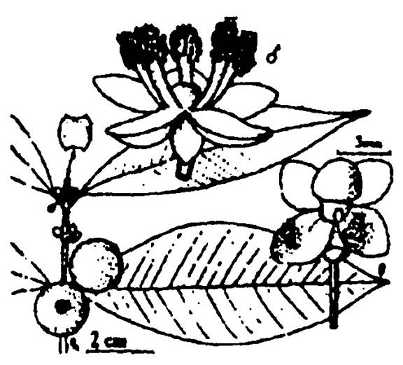
Nơi mọc: Mọc hoang từ Quảng Trị đến Nam Bộ
Thân: Đại mộc, cao 20m, nhánh non hình vuông
Lá: Xoan thon, chót nhọn, gân phụ mảnh
Hoa: Đơn tính màu đồng chu
Trái: Tròn nhỏ, màu vàng lục có hột to 6 – 8 mm
Phần ăn được: Trái
Chế biến: Không
TRÔM – TRÔM HOE
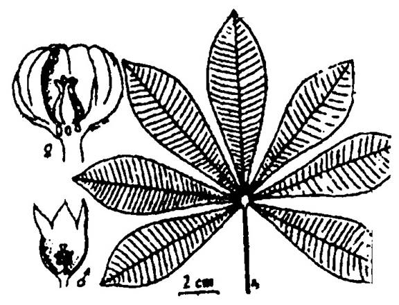
Nơi mọc: Mọc hoang và thường được trồng để làm nọc tiêu hay trụ hàng rào (rất dễ trồng)
Thân: Đại mộc cao 6 – 9 mét
Lá: Lá kép gồm 7 – 9 lá phụ không cuống, có lông hoe ở mặt dưới
Phần sử dụng: Nhựa cây tươi hay phơi khô
Chế biến: Ngâm nước cho nở ra và ăn như thạch.
BÁT
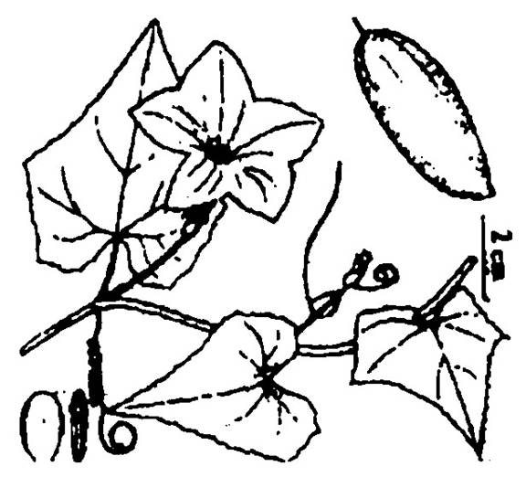
Nơi mọc: Mọc hoang (hay trồng) theo lùm bụi
Thân: Dây leo đa niên có vòi cuốn
Lá: Hơi dầy, không lông
Hoa: Màu trắng, năm cánh, hơi giống hoa bìm bìm
Trái: Khi non màu anh vân trắng, khi chín màu đỏ
Phần sử dụng: Trái và lá
Chế biến: Ăn tươi, luộc hay nấu canh.
CHÙM NGÂY
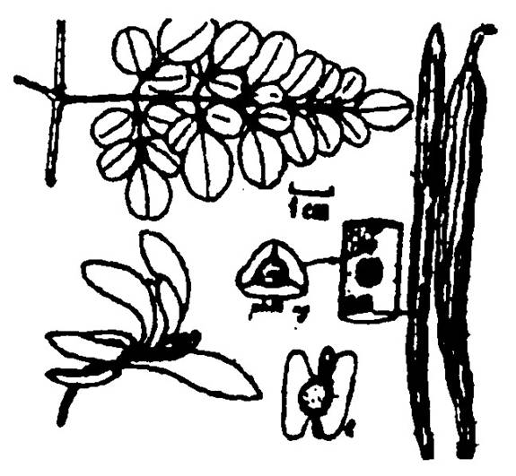
Nơi mọc: Mọc hoang và được trồng ở Nam bộ
Thân: Thân mọc cao từ 4 – 9 mét có nhánh to.
Lá: Kép 3 lần, màu xanh mốc, không lông
Hoa: Màu trắng, to, hình giống như hoa đậu
Trái: To dài đến 55cm, khô nở thành 3 mảnh
Phần sử dụng: Trái, lá và hột
Chế biến: Lá, trái non xào nấu như rau, hột ép dầu
GAN TIÊN THƠM – CHÂU THI
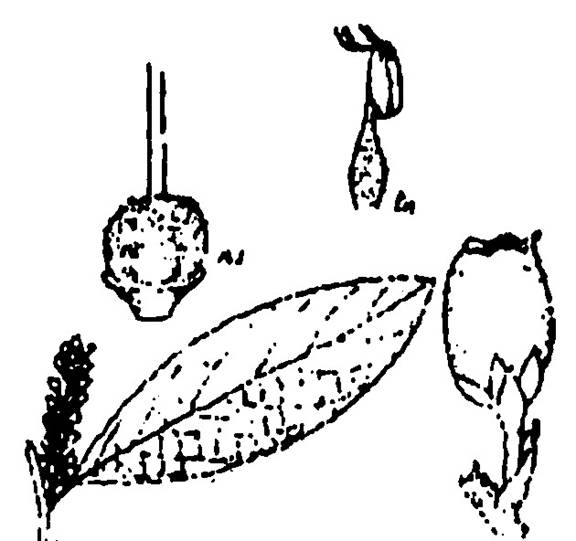
Nơi mọc: Mọc hoang ở các vùng núi cao Bắc Bộ
Thân: Tiểu mộc, cao 3m, nhánh nằm, không lông
Lá: Phiến hình bầu dục, thon, không lông
Hoa: Chùm ở nách lá, màu trắng
Trái: Nang tròn, chứa nhiều hột
Phần sử dụng: Trái
GĂNG NÉO
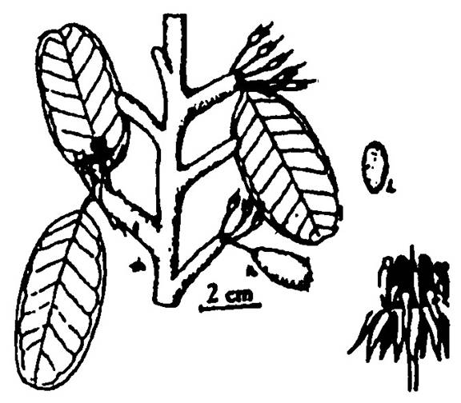
Nơi mọc: Mọc hoang ở các rừng còi duyên hải, có trồng nhiều ở Côn Sơn.
Thân: Đại mộc, nhánh ngắn, vòng đều quanh thân
Lá: Phiến dài bầu dục, không lông
Hoa: Chùm hoa màu trắng
Trái: Phì quả to 1,5cm, cơm vàng, hột dẹp láng
Phần sử dụng: Trái
SẾN MẬT
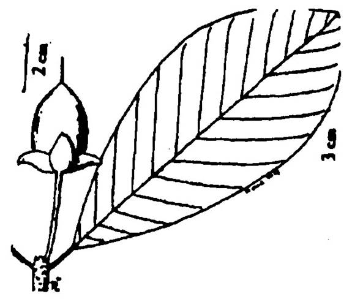
Nơi mọc: Mọc hoang ở Bắc bộ và được trồng ở Nam bộ, dọc theo sông Cửu Long
Thân: Đại mộc, cao khoảng 20m
Lá: Phiền bầu dục, mặt dưới có gân lồi, lông nhung
Hoa: Chùm ở nách
Trái: Phì quả cao 3cm, có từ 1 – 3 hột
Phần sử dụng: Trái
DUNG CHÙM
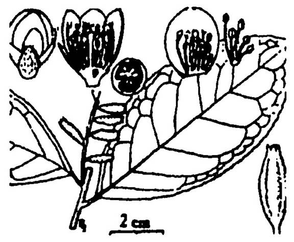
Nơi mọc: Mọc hoang từ cao độ 1000 – 2000 mét.
Thân: Đại mộc nhỏ, cao khoảng 8m, vỏ nứt sâu
Lá: To, phiến xoan bầu dục, mặt trên xanh đậm
Hoa: Chùm đơn, màu trắng hay vàng, thơm
Trái: Hình thoi, dài khoảng 1cm, không lông
Phần sử dụng: Trái và lá
Chế biến: Lá nấu uống như trà, trái ăn tươi
XAY
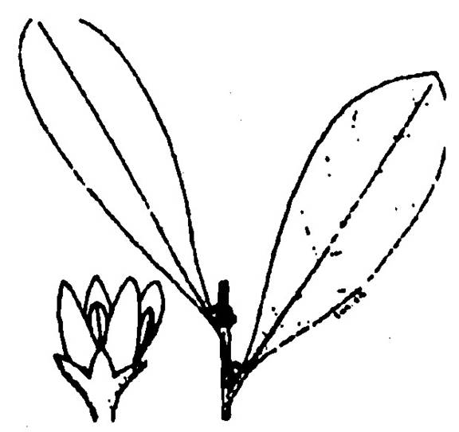
Nơi mọc: Khắp núi rừng từ Trung đến Nam bộ
Thân: Tiểu mộc, cao khoảng 5m, nhánh non có lông
Lá: Hình muỗn dài, nhỏ, đầu tròn, không lông
Hoa: Hoa nhỏ, chùm ở nách lá, không lông
Trái: Tròn, từng chùm, khi chín màu đen mốc
Phần sử dụng: Trái và lá
Chế biến: Trái ăn tươi, lá nấu canh
MÓC CỘT
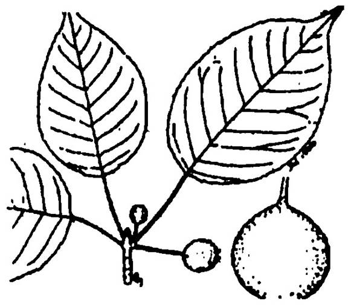
Nơi mọc: Rừng thưa ở độ cao 1000 – 2000 mét
Thân: Đại mộc, cao 8 – 12 m, nhánh có khi có gai
Lá: Đáy tròn, chót có mũi ngắn, rụng theo mùa.
Hoa: Màu trắng, chùm tụ tán
Trái: Tròn, chót có thẹo của đài
Phần sử dụng: Trái
DUM LÁ HƯỜNG
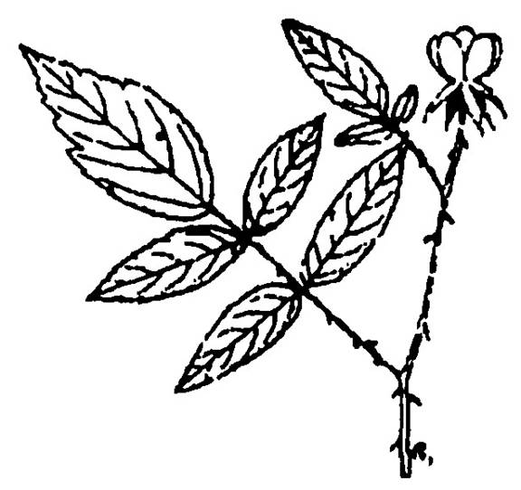
Nơi mọc: Mọc hoang các vùng núi cao trên 1000m
Thân: Bụi, có lông mịn, có gai nhỏ.
Lá: Lá kép do lá phụ mọc đối, mép có răng cưa
Hoa: Ở chót nhánh, cánh tròn, màu trắng, thơm
Trái: Tròn, to 2 cm
Phần sử dụng: Trái
Chế biến: Lá nấu như trà, trái ăn tươi
TU LÚI – NGẤY LÁ NHỎ
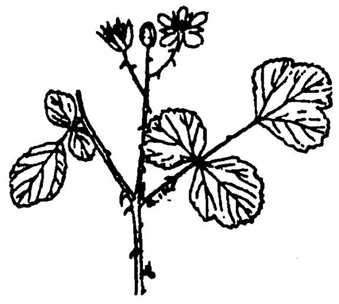
Nơi mọc: Mọc hoang bình nguyên đến cao nguyên
Thân: Bụi trườn, nhánh mảnh, có lông và gai cong
Lá: Lá bẹ, lá phụ nhỏ, mặt trên không lông, mặt dưới đầy lông trắng
Hoa: Tản phòng ở ngọn, màu hường, dài đầy lông, có gai nhỏ
Trái: Hình bán cầu, màu đỏ, vị chua
Phần sử dụng: Trái
THIÊN TUẾ
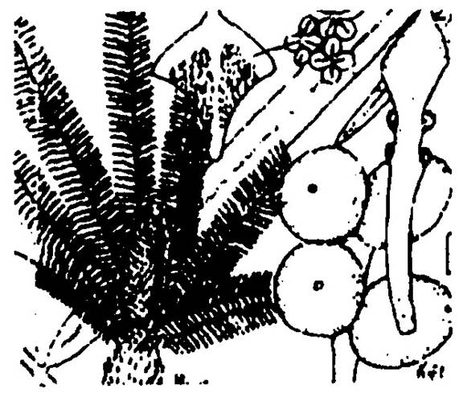
Nơi mọc: Mọc hoang và còn được trồng làm kiểng
Thân: Cao 1 – 6 m
Lá: Dài 0,5 – 2m, có thứ diệp từng cặp một
Hoa: Ít khi có hoa
Quả: Hình xoan, màu vàng hay đỏ (có độc)
Phần làm thực phẩm: Thân cây
Chế biến: Lấy lõi thân cây giã thành bột làm bánh hay chế biến các món khác.
DỦ DẺ
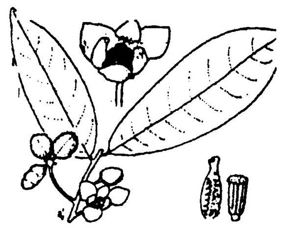
Nơi mọc: Mọc hoang ở rừng còi dựa biển
Thân: Cây nhỏ, đứng hay leo, nhánh mang lông
Lá: Phiến lá dài, mặt dưới có lông màu nâu
Hoa: Màu vàng, 6 cánh, cô độc hay từng cặp
Quả: Phì quả nắn, từ 5 – 7 hột
Phần làm thực phẩm: Trái
Chế biến: Không
BỒ QUẢ ĐÁC – BỒ QUẢ HOE
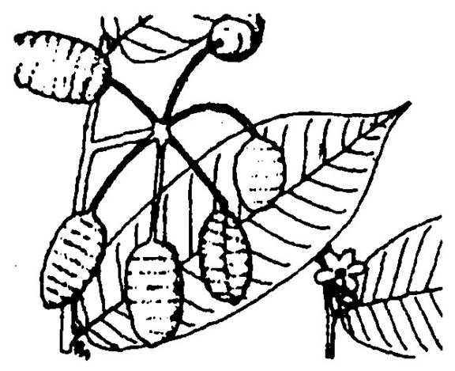
Nơi mọc: Rừng còi, rừng thưa (Kontum, Đacto…)
Thân: Dây leo thẳng, có lông màu nâu hoe
Lá: Dài 12 – 15 cm, có lông cứng vàng hoe
Hoa: Mọc đối diện với lá, to 3 – 4 cm, có lông
Trái: Phì quả có lông mịn, chứa 5 – 6 hột
Phần ăn được: Trái
Chế biến: Không
NẤM CƠM – XƯN XE – NGŨ VỊ TỬ NAM
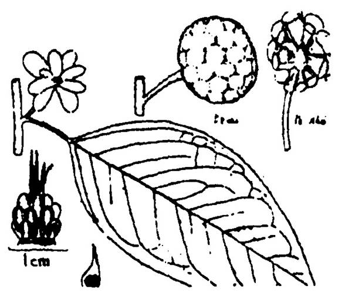
Nơi mọc: Mọc hoang ở các vùng núi trung nguyên
Thân: Dây leo rất cao, nhánh non có phấn mịn
Lá: Hình xoan bầu dục. Mặt trên láng, nâu đen
Hoa: Màu đỏ, cô độc, to 12 – 15 cm
Trái: Giống như một trái mãng cầu ta nhỏ
Phần ăn được: Trái
Chế biến: Không
KHOAI LANG (WILD POTATO)
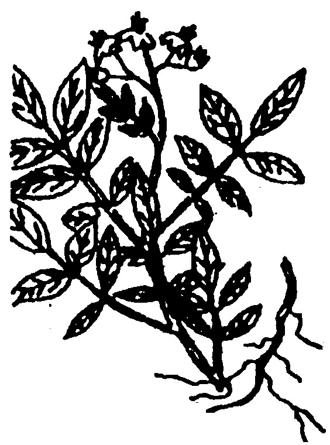
Nơi mọc: Mọc hoang ở những vùng núi Nam Mỹ
Thân: Thẳng cao 30 – 80 cm, sống lâu năm
Lá: Kép xẻ lông chim, lá chét to nhỏ khác nhau
Hoa: Mọc thành sim, màu tím hay trắng
Quả: Mọng hình cầu, xanh nhạt hay tím nhạt
Phần làm thực phẩm: Củ
Chế biến: Luộc hay nướng
CỦ SÚNG
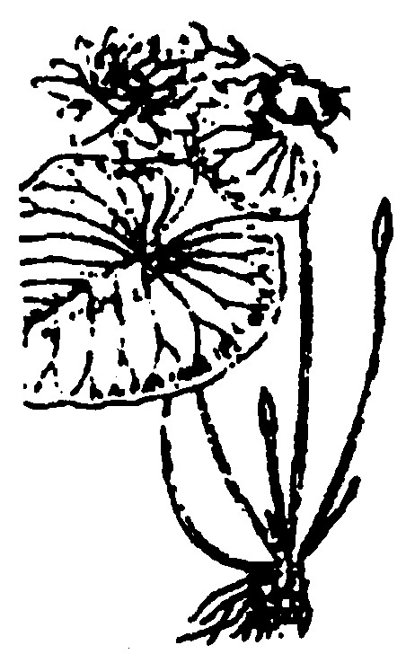
Nơi mọc: Mọc hoang ở những vùng ngập nước
Thân cây: Thân rễ phát triển thành củ
Lá: Tròn xẽ hình tim, cuống dài
Hoa: Nhiều cánh, màu hồng tím hay trắng
Phần làm thực phẩm: Củ và cuống hoa còn non
Chế biến: Củ - luộc. Cuống hoa: ăn sống, xào…
BỨA
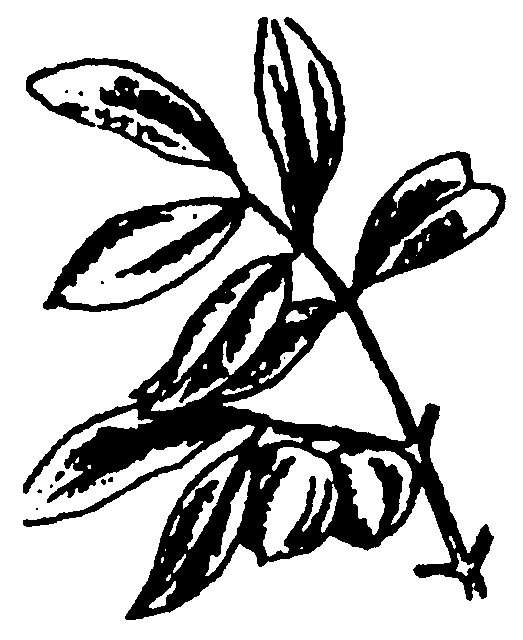
Nơi mọc: Mọc hoang và được trồng ở miền Bắc
Thân: Cây gỗ cao 10 – 15 mét
Lá: Mọc đối, mép trơn, nhẵn bóng
Hoa: Màu vàng, hoa đực và lưỡng tính
Quả: Mọng hình cầu, ngoài vàng, trong hơi đỏ
Phần làm thực phẩm: Quả và lá
Chế biến: Ăn sống hoặc nấu canh chua.
Ô MÔI – BỒ CẠP NƯỚC
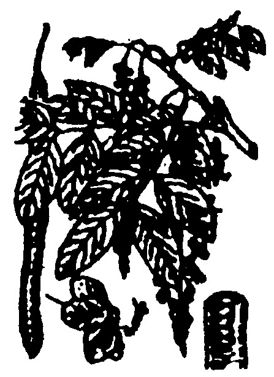
Nơi mọc: Mọc hoang ở miền Nam nước ta
Thân: Cây gỗ cao 7 – 15 mét
Lá: Kép lông chim từ 5 – 16 đôi, hình thuôn
Hoa: Mọc thành chùm, màu hồng tươi, thông
Quả: Hình trụ cứng, dài 20 – 60 cm, màu đen nhạt
Phần làm thực phẩm: Trái và hạt
Chế biến: Trái ăn tươi, hạt rang hay luộc.
MƠ – Ô MAI – HẠNH
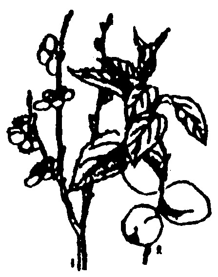
Nơi mọc: Mọc hoang và được trồng ở miền Bắc
Thân: Loại cây nhỏ, cao 4 – 5 mét
Lá: Mọc so le, bầu dục nhọn đầu, mép răng cưa
Hoa: Năm cánh, trắng hoặc hồng, mùi thơm
Quả: Quả hạch, hình cầu, màu vàng xanh, 1 hạt
Phần ăn được: Quả
Chế biến: Ăn tươi hay muối thành ô mai.
THỊ - THỊ MUỘN
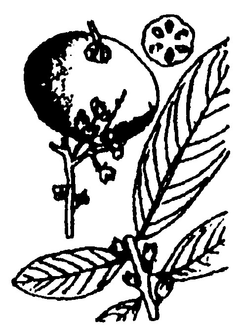
Nơi mọc: Mọc hoang và được trồng khắp nơi
Thân: Gỗ cao từ 5 – 10 mét
Lá: Mọc so le, hình trứng thuôn, phủ lông
Hoa: Đa tính, hợp thành sim, màu trắng, có lông
Quả: Tròn hơi đẹt, khi chín màu vàng, thơm gắt
Phần ăn được: Trái
Chế biến: Không,
DÂU TẰM - TẦM TANG
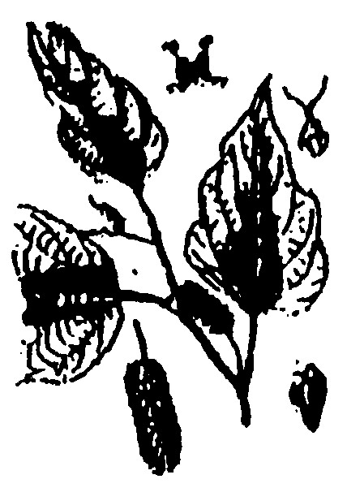
Nơi mọc: Được trồng và mọc honag (do trồng rồi bỏ)
Thân: Thường cao 2 – 3 mét, có thể cao 15 mét
Lá: Mọc so le, hình bầu dục nhọn, mép răng cưa
Hoa: Đơn tính, mọc thành khối hình cầu, 4 lá dài
Trái: Trái kép, mọng nước, màu đỏ, sắc đen thẩm
Phần ăn được: Trái
Chế biến: Không.
SỔ - THIỀU BIÊU
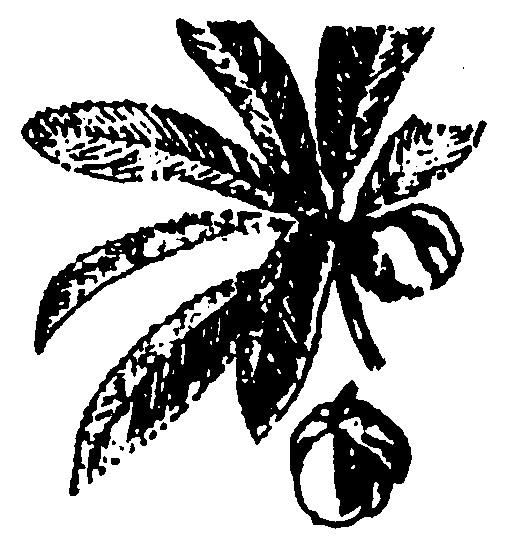
Nơi mọc: Mọc hoang ở rừng núi, dọc bờ sông, suối
Thân: Cây gỗ to, cao 15 – 20 mét
Lá: To, dài, hình bầu dục nhọn, mép khía răng cưa
Hoa: Hoa to, mọc đơn độc ở kẽ lá.
Trái: Hình cầu, do lá đài phát triển thành bản dầy
Phần ăn được: Trái
Chế biến: Không.
SIM – ĐƯƠNG LÊ – SƠN NHẬM
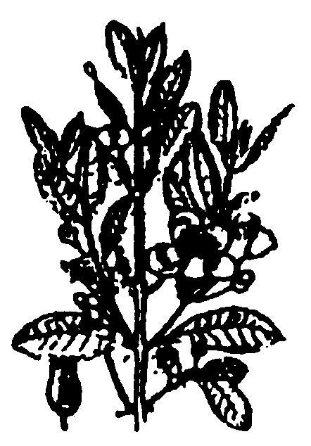
Nơi mọc: Mọc hoang ở các đồi trọc Trung, Nam bộ
Thân: Cây nhỏ, cao 1 – 2 mét
Lá: Mọc đối, hình thuôn, phiến dầy, có lông mịn
Hoa: Hồng tím, đơn độc hoặc từng chùm 3 cái
Trái: Mọng, màu tím thẩm, hạt nhiều
Phần ăn được: Trái
Chế biến: Không.
SUNG
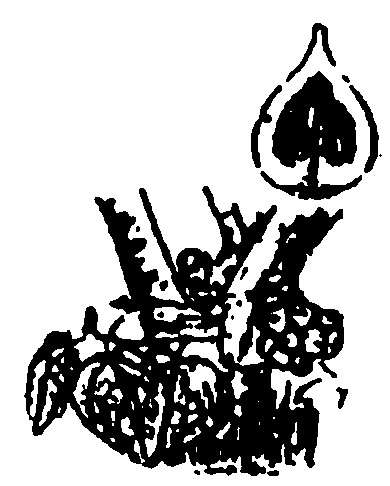
Nơi mọc: Mọc hoang và được trồng khắp nơi ở VN
Thân: Cây to, phân nhánh ngang
Lá: Hình mũi giáo, có lông khi còn non
Hoa: Để hoa phát triển thành trái
Trái: Trái giả, mọc thành chùm trên thân cây
Phần ăn được: Trái và lá non
Chế biến: Ăn sống hoặc muối, lá có thể gói nem.
ĐÀI HÁI – MỠ LỢN – MƯỚP RỪNG
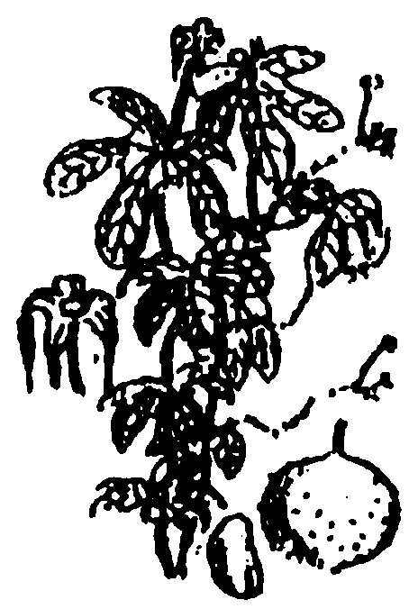
Nơi mọc: Mọc hoang trong rừng núi
Thân: Dây leo, thân nhẵn, có thể dài hơn 30 mét
Lá: Hình tim, chia 3 – 5 thùy, rộng 15 – 25 cm
Hoa: Hoa đực mọc chùm, hoa cái đơn độc
Trái: Hình cầu, to, có 6 – 12 hạt lớn, hình trứng dẹt
Phần ăn được: Hạt
Chế biến: Ép dầu, nướng hay rang như đậu phộng.
MÂM XÔI – ĐÙM ĐŨM
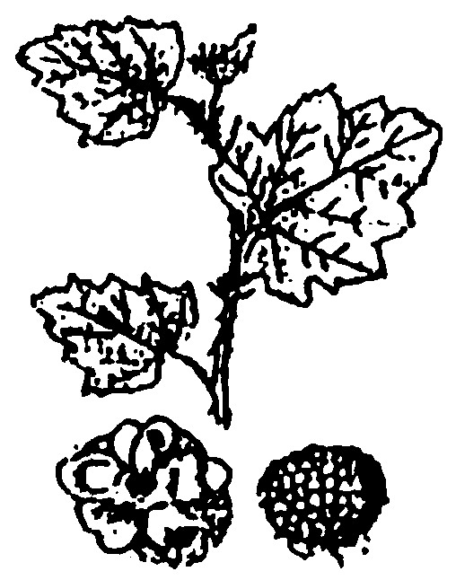
Nơi mọc: Mọc hoang ở khắp núi rừng miền Bắc
Thân: Cây vừa, thân leo, có nhiều gai nhỏ
Lá: Lá đơn, hình tim, chia 5 thuỳ, mặt có lông
Hoa: Hình chùm, 5 cánh, màu trắng, nhiều nhuỵ
Trái: Kép, hình mâm xôi, khi chín màu đỏ tươi
Phần ăn được: Trái
Chế biến: Không.
CHAY
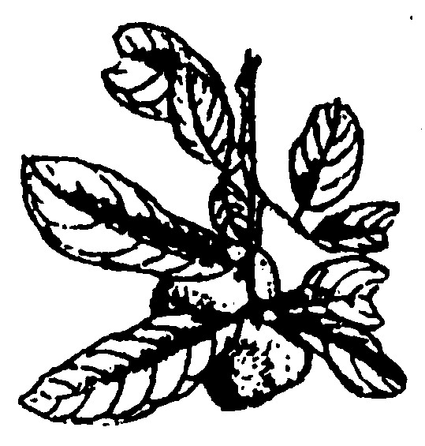
Nơi mọc: Mọc hoang và được trồng nhiều nơi
Thân: Cây to, cao 10 – 15 mét
Lá: Mọc so le, trên nhẵn, dưới có lông ở gân lá
Hoa: Hoa đực, hoa cái mọc trên cùng một cây
Trái: Khi chín màu vàng, mềm, cơm màu đỏ
Phần ăn được: Trái
Chế biến: Không.
NHÓT – LÓT
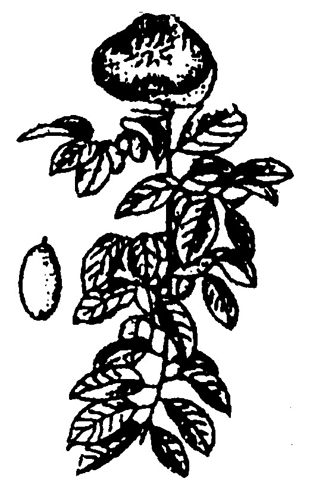
Nơi mọc: Mọc hoang, trồng ở các tỉnh miền Bắc
Thân: Cây vừa, cành mềm, có gai
Lá: Hình bầu dục, mọc so le, mặt dưới trắng bạc
Hoa: Không tràng, có 4 lá dài
Trái: Hình bầu dục, khi chín đỏ tươi, có phủ lông
Phần ăn được: Trái
Chế biến: Ăn sống hoặc nấu canh.
CHUA CHÁT
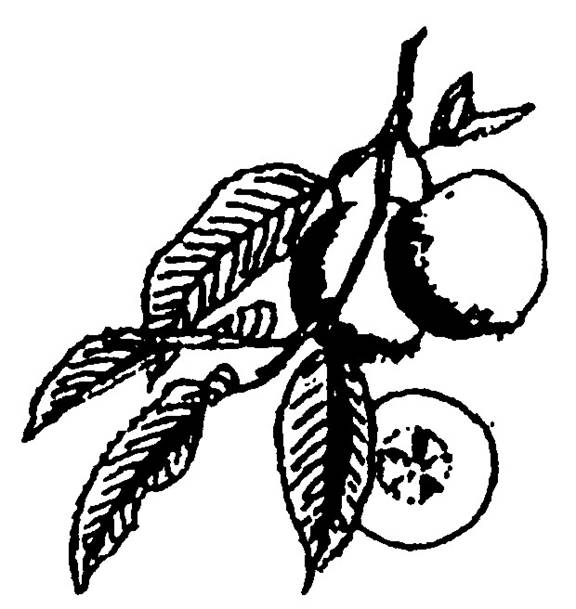
Nơi mọc: Mọc hoang các tỉnh cực Bắc VN
Thân: Gỗ cao 10 – 15 mét, cây non có gai
Lá: Hình bầu dục, mép khía răng cưa
Hoa: Họp thành tán, từ 3 – 5 hoa, cánh màu trắng
Trái: Tròn dẹt, khi chín màu vàng lục
Phần ăn được: Trái
Chế biến: Không.
TÁO MÈO
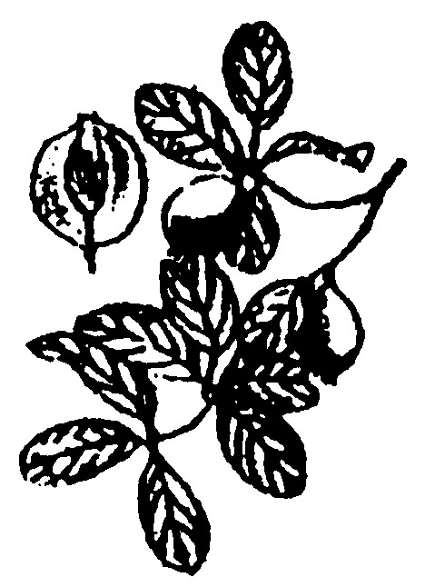
Nơi mọc: Mọc hoang ở các tỉnh cực Bắc VN
Thân: Cây lỡ, cao 5 – 6 mét, cây non cành có gai
Lá: Đa dạng, non xẻ thuỳ, cây lớn bầu dục
Hoa: Họp thành chùm 1 – 3 hoa, cánh màu trắng
Trái: Hình cầu thuôn, khi chín màu vàng lục
Phần ăn được: Trái
Chế biến: Không.
HỒNG - THỊ ĐẾ - TAI HỒNG
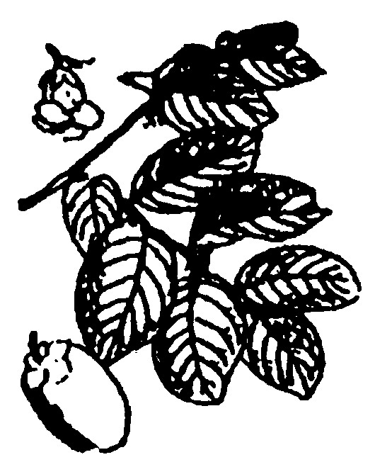
Nơi mọc: Mọc hoang ở Trung Quốc, Nhật Bản; được trồng ở các tỉnh miền Bắc VN
Thân: Cây lỡ, cao 5 – 6 mét
Lá: Thuôn hay hình trứng, mép nguyên hay lượn sóng
Hoa: Hoa đực mọc 2-3 cái một, hoa cái mọc đơn độc
Trái: Hình bầu dục, khi chín màu vàng hay đỏ thắm
Phần ăn được: Trái
Chế biến: Phơi khô hay ăn tươi.
GẮM – DÂY MẪU – DÂY SÓT
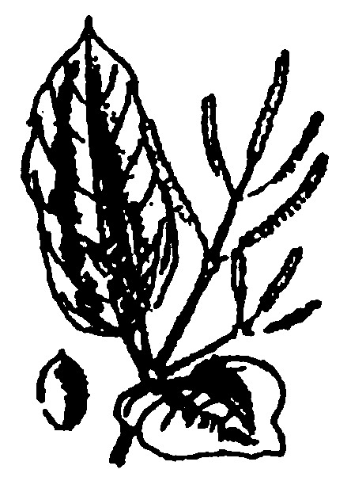
Nơi mọc: Mọc hoang tại các vùng rừng núi nước ta
Thân: Dây leo, dài 10 – 12 mét, rất nhiều mấu
Lá: Mọc đối, hình trứng, thuôn dài, đầu nhọn
Hoa: Hình nón, thành chùm dài hay mọc vòng
Trái: Hình trứng, bóng, phủ một lớp như sáp
Phần ăn được: Trái
Chế biến: Không
SEN – LIÊN – QUÌ
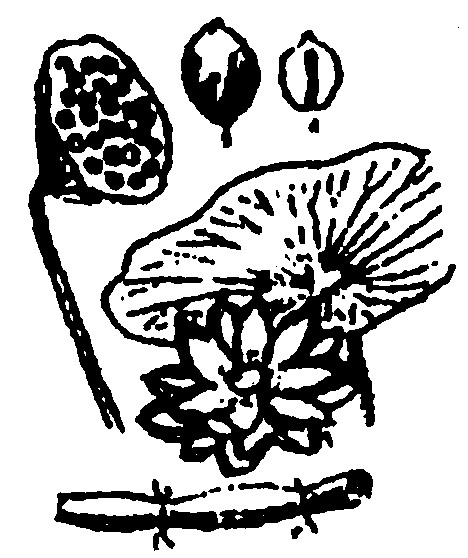
Nơi mọc: Được trồng và mọc hoang ở các ao đầm
Thân: Hình trụ, mọc trong bùn, thường gọi là ngó
Lá: Hình khiên, tròn, to, gân toả đều
Hoa: To, màu trắng hay đỏ hồng, nhiều cánh
Trái: Được gọi là hạt, nằm trong gương sen
Phần ăn được: Hạt, ngó sen, cuống hoa non
Chế biến: Ăn sống, xào nấu, muối chua, nấu chè.
TRỨNG CUỐC
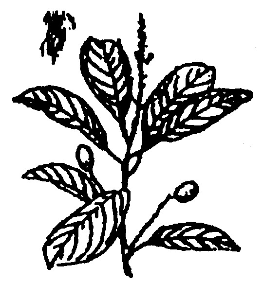
Nơi mọc: Mọc hoang khắp rừng núi nước ta
Thân: Cây bại, có cành vươn dài
Lá: Mọc so le, hình mác dài, mặt trên nhẵn bóng
Hoa: Nhỏ, màu trắng, mọc thành chùm ở kẽ lá
Trái: Hình trứng, xám có điểm những chấm trắng
Phần làm thực phẩm: Trái và lá
Chế biến: Trái ăn, lá nấu uống thay trà (chè)
DÂU RƯỢU – DÂU TIÊN – THANH MAI
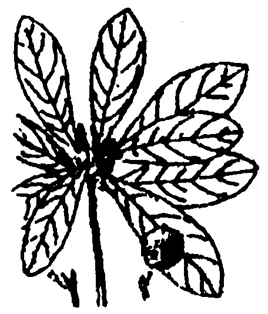
Nơi mọc: Mọc hoang ở tỉnh miền Bắc và Trung
Thân: Cây thường cao 0,40 – 0,50 mét
Lá: Thuôn dài, non có răng cưa rõ, già không rõ
Hoa: Hoa cái hình đuôi sóc, hoa đực gầy, thưa hoa
Trái: Hình cầu, gần giống trái dâu, chín màu đỏ tím
Phần ăn được: Trái
Chế biến: Phơi khô, ăn tươi, ủ thành rượu.
LƯỜI ƯƠI – BÀNG ĐẠI HẢI
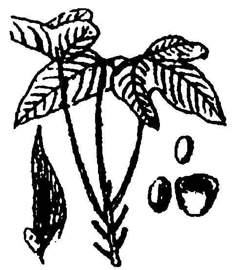
Nơi mọc: Mọc hoang ở các tỉnh miền Nam nước ta
Thân: Cây to, cao 30 – 40 mét
Lá: Đơn, nguyên hay xẽ thuỳ, mặt dưới nâu hay bạc
Hoa: Hoa nhỏ, không cuống, họp thành 3 – 5 chuỳ
Trái: Dạng lá, hình trứng, giống đèn treo
Phần ăn được: Trái
Chế biến: Ngâm trái vào nước cho nở ra, cho đường vào rồi ăn như thạch.
MUA BÀ – DÃ MẪU ĐƠN
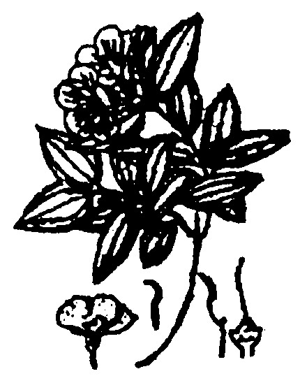
Nơi mọc: Khắp các bãi hoang, đồi trọc, ven rừng…
Thân: Bụi, cao khoảng 1 mét, phủ lông
Lá: Hình trứng nhọn, có 5 – 7 gân dọc, phủ lông
Hoa: Lớn, mọc chụm đầu cành, màu tím hoa cà
Trái: Hình chén, phần đầu hơi hẹp lại
Phần ăn được: Trái
Chế biến: Không
XỘP – VẢY ỐC – SUNG THẰN LẰN
Nơi mọc: Mọc hoang, được trồng làm cảnh khắp nơi
Thân: Cây leo nhờ rễ, bám vào vách đá, đại thụ…
Lá: Đa dạng, mép nguyên, mặt lá nhám
Hoa: Hoa nhiều, đơn tính, đế hoa lõm
Trái: Trái giả, hình chén kín, khi chín màu vàng, đỏ
Phần ăn được: Trái
Chế biến: Không
DẺ - KHA THỤ TÀU
Nơi mọc: Các sườn núi cao dưới 700 mét
Thân: Cây gỗ cao khoảng 20 mét, vỏ màu tro xám
Lá: Dạng mũi mác, mép trên có răng cưa
Hoa: Nhỏ, đơn tính, hoa đực trắng lục, hoa cái chứa một tổng bao xếp thành một bông ngắn
Trái: Quả hạch, hình trứng, màu vàng nâu, có lông
Phần ăn được: Hạt
Chế biến: Rang ăn hay nấu với thịt
DÂU NÚI – XÀ MỖI
Nơi mọc: Mọc hoang theo bờ suối, nơi ẩm, rừng núi
Thân: Cây thảo, mọc bò, sống lâu năm, rễ ngắn thô
Lá: Kép lông chim, 3 lá chét, mép có răng cưa
Hoa: Màu vàng, mọc đơn độc, cuống dài, nhiều lá đài
Trái: Quả bế, nhăn nheo, bầu dục, chín màu hồng
Phần ăn được: Trái
Chế biến: Ăn tươi - ủ rượu- làm mứt
KIM ANH – THÍCH LÊ TỬ - ĐƯỜNG QUÁN TỬ
Nơi mọc: Mọc hoang ở các vùng cực Bắc nước ta
Thân: Mọc dựa thành bụi, nhiều gai như hoa hồng
Lá: Kép lông chim, 3 lát chét, mọc so le, răng cưa
Hoa: Mọc riêng đầu cành, 5 cánh, màu trắng
Trái: Hình trứng, nhiều gai, khi chín màu vàng nâu
Phần ăn được: Trái (bỏ hạt, vì có độc)
Chế biến: Không
HỒ ĐÀO – ÓC CHÓ
Nơi mọc: Mọc hoang từ Đông Nam Châu Âu tới Nhật Bản, được trồng ở các tỉnh cực Bắc nước ta
Thân: Cây gỗ to, cao khoảng 20 mét
Lá: Kép lông chim, có từ 7 – 9 lá chét, mùi hăng
Hoa: Đơn tính, hoa đực hình đuôi sóc.
Trái: Quả hạch, có vỏ nạc, chín nứt thành 3 – 4 mảnh
Phần ăn được: Nhân hạt
Chế biến: Ép dầu hoặc rang ăn.
CÁC LOẠI CÂY NHƯ RAU CẢI
THỔ CAO LY SÂM
Còn gọi là giả nhân sâm, thổ nhân sâm. Mọc hoang và được trồng khắp nơi ở Việt Nam. Dùng lá, thân non, củ, để nấu canh.
MỒNG TƠI
Là một loại dây leo, có nguồn gốc ở các nước nhiệt đới. Mọc hoang hoặc được trồng theo hàng rào để lấy rau ăn. Dùng lá và thân cây non nấu canh, luộc…
RAU ĐẮNG
Mọc honag trong những nơi ẩm, ruộng bỏ hoang, lòng suối cạn. Dùng toàn thân, ăn sống hoặc nấu canh.
CẢI SƠN – CRESSON
Mọc hoang ở các xứ lạnh, được trồng ở các vùng cao nguyên Việt Nam. Dùng cả cây ăn sống, trộn dầu dấm hoặc nấu canh.
NGỔ - NGỔ TRÂU
Mọc hoang trong các ao hồ. Dùng thân cây ăn sống hoặc làm gia vị, nêm canh
DỪA NƯỚC
Là loại cây bò hay mọc nổi trên mặt nước, rễ bén ở các mấu, có phao nổi. Dùng toàn cây, ăn sống
RAU TÀU BAY
Là loại “cải trời”, mọc hoang ở những vùng rừng chồi, trảng trống, rừng tái sinh… Luộc hay xào nấu như các loại cải trồng.
BỤP DẤM
Là loại cỏ cao khoảng 1 mét, mọc ở các bãi đất hoang, thân có gai móc, hoa vàng, lá và đọt non nấu canh hay thay thế dấm.
DƯA NÚI
Dây leo hàng năm, thân nhám, mảnh. Trái xoan nhọn, lúc chín màu đỏ. Mọc ở đất hoang và lùm bụi. Trái non và lá dùng nấu canh. Rất đắng.
GẠC NAI
Là một loại cây thuỷ sinh, thân mềm, mọc khắp nơi trong nước, ở những vùng đất bùn lầy, đồng ruộng… Ở Nhật, người ta trồng để làm rau ăn.
CỨT QUẠ
Loại cỏ bò có thân mảnh. Mọc hoang ở các rừng tái sinh, đất hoang Cao Lạng đến Phú Quốc. Lá người ta thường dùng để câu cá Mè, vinh đọt và lá non nấu canh.
CÁP VÀNG
Cây thân mộc, cao khoảng 10 mét. Mọc hoang ở các vùng đất khô Nam, Trung Bộ, hoa màu vàng có vết cam. Người ta dùng lá và hoa để nấu canh.
CẢI ĐẤT TRÒN
Cây thân thảo, cao đến 60cm, ít nhánh. Rìa lá có răng không đều. Mọc hoang ở sân vườn và các vùng đất hoang trống trải. Lá dùng như rau cải.
HẢI CHÂU
Cỏ mập, nằm, có rễ ở mắt. Lá có phiến hình cái dầm, mập, dầy, không lông. Mọc hoang dựa ven biển. Lá ăn được, tuy nhiên, phải luộc và xả nước thật kỹ.
DỀN GAI - DỀN CƠM
Dền gai có thể cao đến 1 mét, phân nhiều nhánh, không lông, thân có gai. Dền cơm thấp nhỏ hơn, thân không gai. Mọc ở vùng đất hoang, dựa lộ… lá và thân luộc hay nấu canh
CẢI ĐẤT ẨN
Cỏ hằng niên, cao đến 50cm. Lá nguyên hay có thuỳ hình đờn violon. Mọc hoang ở các rẫy ruộng, đất hoang, còn có khi trồng để lấy lá và hột ăn như rau cải
CỎ TAM KHÔI
Cỏ mập, mọc sà ở đất, lá cặp một lớn một nhỏ. Hoa màu hường nhạt hay trắng. Mọc hoang từ Bắc đến Nam. Lá ăn tươi hay nấu canh.
TINH THẢO
Là loại cỏ nằm, rồi đứng. Lá mỏng, to, đáy tròn, chót nhọn. Hoa tụ tán dễ thấy, màu xanh. Mọc hoang ở đồng cỏ, rừng thưa. Thân và lá non dùng ăn như rau.
MÃ ĐỀ - XA TIỀN
Mọc hoang và được trồng nhiều nơi trong nước, dùng toàn cây để nấu canh ăn cho mát, lợi tiểu
RAU SAM
Là một loại cỏ sống hàng năm, thân màu tím hay đỏ nhạt. Mọc hoang ở những vùng cát ẩm. Dùng toàn thân ăn sống hoặc nấu canh.
MÙI TÀU
Cây mọc hoang và được trồng khắp nơi trong nước. Lá ở gốc mọc thành hoa thị, thuôn dài, mép có răng cưa, hơi gai. Lá tươi dùng làm gia vị hay ăn sống
BÙ NGÓT
Cây nhỏ, nhẵn, có thể cao 1 – 2 mét. Mọc hoang và được trồng khắp nơi trong nước để lấy lá nấu canh.
LÁ MƠ
Còn gọi là mơ tam thể. Là một loại dây leo, lá mọc đối, có phủ lông. Mọc hoang và được trồng khắp nơi trong nước để lấy lá ăn.
DIẾP CÁ – GIẤP CÁ
Là một loại cỏ nhỏ, mọc hoang và được trồng khắp các vùng ẩm ướt. Hái toàn thân để ăn sống.
TAI CHUA
Là loại cây nhỏ, mọc hoang ở các khu rừng miền Bắc nước ta. Cây còn được trồng để lấy quả và lá ăn hay nấu canh.
RAU MÁ
Là một loại cỏ bò trên mặt đất. Mọc hoang và được trồng ở những vùng đất ẩm, thu hái toàn thân để ăn sống, nấu canh hay chế biến nước giải khát.
SA SÂM
Là loại cỏ sống lâu năm, rễ phình to thành củ, thân bò chia thành nhiều đốt, mỗi đốt mọc lên một cây con. Thường mọc hoang ở các bờ biển Việt Nam.
LÁ LỐT
Là loại cây thân mềm, nhỏ, mọc hoang và được trồng nhiều nơi trong nước để lấy lá ăn hoặc làm gia vị
CHÙM BAO
Còn gọi là dây Lạc Tiên. Là một loại dây leo, mọc hoang khắp nơi trong nước. Lá và đọt non dùng nấu canh. Trái ăn được.
SO ĐŨA
Cây thân gỗ, cao 8 – 10 mét. Mọc hoang và được trồng nhiều nơi ở miền Nam nước ta. Hoa, trái non, lá, có thể dùng để xào hoặc nấu canh.
CÀNG CUA
Cây cỏ sống hàng năm, mọc hoang ở những nơi ẩm mát. Thu hái toàn cây để ăn sống hay trộn dầu dấm.
ĐẬU SĂNG
Cây bụi, cao 1- 2 mét, mọc hoang và được trồng nhiều nơi trong nước. Trái non dùng để xào như đậu ván. Trái già rang để nấu nước uống hay nấu chè.
VỐI
Cây cao 3 – 6 mét, mọc hoang và được trồng khắp nơi trong nước để lấy lá và nụ phơi khô, hay ủ nấu nước uống.
KÈO NÈO
Mọc hoang ở các ao hồ, đầm lầy, thu hái lá dùng để ăn sống.
CHUA ME ĐẤT
Là một loại cỏ bò lan trên mặt đất. Mọc hoang khắp nơi trong nước, thu hái toàn thân để nấu canh, ăn sống.
CHÈ – TRÀ
Nếu mọc hoang và không cắt xén, có thể cao đến 10 mét. Hái búp và lá non, vò rồi xao cho khô để nấu nước uống.
GHI CHÚ: Những cây dùng làm thực phẩm vừa kể trên đây còn có thể dùng làm dược liệu để chữa một số bệnh. Các bạn cần nghiên cứu để kết hợp giữa thực phẩm và thuốc men.
Những cây hoang dã nhưng có thể dùng làm thực phẩm dưới đây, chúng tôi tham khảo từ tài liệu của BOY SCOUTS OF AMERICA (HƯỚNG ĐẠO SINH HOA KỲ), cho nên hầu hết thường mọc tại vùng Bắc Mỹ. Tuy nhiên, có một số cây cũng mọc ở Việt Nam và một số nước lân cận.
BLUEBERRY
Mọc hoang ở Mỹ, Canada, và cận Bắc cực. Quả mọng ăn sống, nấu chín, ướp lạnh hay phơi khô để dành.
CRANBERRY (MÂN VIỆT QUẤT)
Mọc hoang khắp Bắc Mỹ. Trái được hái sau đợt sương giá đầu tiên. Trái tươi hay khô đều có thể nấu với đường để làm sốt, mứt hay si-rô.
BEECH
Mọc ở các nơi ẩm ướt miền Nam và Đông Hoa Kỳ, Canada. Quả hạch kép, có thể ăn sống hay rang lên xay uống như cà phê. Vỏ trong phơi khô, xay bột làm bánh.
BIRCH (BU-LÔ)
Mọc ở những ôn đới Bắc Mỹ. Vỏ ngoài dùng làm thuyền, thùng đựng nước, lợp chòi trú ẩn… Vỏ trong có thể ăn sống, thái nhỏ nấu canh. Lá non nấu uống thay trà.
BUNCHBERRY
Mọc hoang ở Hoa Kỳ, Alaska và một vài nơi cận Bắc cực. Quả mọng có thể ăn sống hoặc nấu chín.
BUTTERNUT
Mọc ở miền Đông Hoa Kỳ và Canada. Quả hạch có nhiều chất béo, ăn được, nhựa thu hoạch để nấu làm si-rô.
MAY APPLE
Mọc hoang ở Canada và Bắc Mỹ. Trái ăn sống, ép lấy nước, làm mứt… Chú ý: thân, rễ, lá, có chất độc.
ROSE (HỒNG HOANG)
Mọc hoang ở Bắc Mỹ. Trái có thể ăn sống, hoa làm trà, hạt nghiền làm gia vị.
PAPAW
Cây lớn, mọc hoang ở Hoa Kỳ và Canada. Trái ăn rất ngon và là nguồn dinh dưỡng tốt.
PRICKLY PEAR CACTUS (XƯƠNG RỒNG)
Thường mọc hoang khắp nơi trên thế giới, ở vùng đất cát và hoang mạc. Trái chín có màu đỏ ăn được, thân chứa nhiều nước, có thể sử dụng để sinh tồn.
RUM CHERRY
Cây mọc nhiều từ Canada đến Mexico. Trái có thể ăn sống, nấu chín hoặc chế biến thành rượu.
OAK ACORN (SỒI)
Là một trong những cây ăn trái chính của các cánh rừng ở Mỹ và Canada. Trái phải ngâm nước cho tới khi nước có màu vàng để khử đắng. Sấy khô chậm trên lửa rồi nghiền thành bột để làm bánh.
WILD STRAWBERRY (DÂU TÂY HOANG)
Mọc ở nhiều nơi trên thế giới. Quả mọng ăn sống hay nấu chín. Lá thay trà. Thân và cuống ăn sống.
SUNFLOWER (HƯỚNG DƯƠNG)
Mọc hoang và được trồng khắp nơi trên thế giới. Hạt dùng rang ăn hoặc ép dầu.
WILD PLUM (MẬN HOANG)
Mọc ở Bắc Mỹ và Canada. Trái có thể ăn sống, nấu chín, còn dùng để làm mứt và chế biến thành rượu.
WINTERGREEN
Mọc ở một số nơi, ở Bắc Mỹ và trên thế giới. Quả ăn sống, lá làm trà.
SERVICEBERRY
Mọc ở những vùng trống trải và ẩm ướt ở Bắc Mỹ. Quả mọng ăn sống, phơi khô hay nghiền thành bột để làm bánh.
WILD APPLE (TÁO HOANG)
Mọc hoang ở Bắc Mỹ và Canada. Trái có thể ăn sống hoặc nấu chín.
GROUND CHERRY (THÙ LÙ – BỒM BỘP)
Mọc hoang ở các nước vùng nhiệt đới. Quả chín khi màng bao ở ngoài mỏng như tờ giấy bóng. Quả mọng ăn sống hay làm mứt.
GRAPES (NHO HOANG)
Mọc hoang ở một số nước trên thế giới. Trái mọng kết thành chùm, ăn tươi hoặc phơi khô hay ủ thành rượu. Lá non có thể ăn tươi hoặc xào nấu.
Lưu ý: rễ có chất độc.
HORSERADISH
Mọc hoang ở Bắc Mỹ. Lá có thể luộc, bóp muối, trộn dầu dấm. Củ thái mỏng hoặc mài để nấu với thịt.
CHOKECHERRY
Mọc hoang ở Bắc Mỹ. Quả mọng ăn tươi, nấu chín hay ủ thành rượu.
Chú ý: Trong lá có chất độc
RED CURRANTS (NHO ĐỎ HOANG)
Mọc hoang ở Bắc Mỹ, còn tìm thấy ở những nơi có nước trong sa mạc. Quả mọng kết thành chùm, ăn sống, nấu chín hoặc ủ thành rượu.
KINNIKINIC
Mọc hoang ở Bắc Mỹ. Quả mọng có thể ăn sống hoặc nấu chín. Lá non thay trà. Lá già ủ phơi, hút như thuốc lá.
HICKORY
Rất giống cây Hồ Đào ở Việt Nam. Mọc hoang ở Bắc Mỹ. Quả hạch, có thể ăn sống, hạt rang hoặc ép dầu.
HACKBERRY
Mọc hoang ở Bắc Mỹ. Quả mọng, có thể ăn sống. Nhân của hạt cũng có thể ăn hoặc nghiền làm gia vị.
MOUNTAIN ASH
Cây mọc ở những vùng đất ẩm ở Hoa Kỳ và Canada. Quả mọng, có thể ăn sống, phơi khô, nghiền làm gia vị, làm mứt, chế biến thành rượu.
HAWTHORN (TÁO GAI)
Mọc hoang ở một số nước trên thế giới. Trái có màu đỏ hồng, vàng, đen hoặc hơi xanh. Có thể ăn tươi, phơi khô, nghiền bột làm bánh.
NEW JERSEY TEA
Mọc hoang ở Hoa Kỳ và Nam Canada. Lá non tươi hay phơi khô có thể nấu trà uống.
KENTUCKY COFFEE
Mọc hoang ở Bắc Mỹ. Hạt rang lên để ăn như đậu phụng, hoặc xay thành bột uống như cà-phê.
WILD RICE (LÚA HOANG)
Mọc hoang vùng ngập nước ở nhiều nơi trên thế giới. Hạt thu hoạch vào cuối mùa hè và chế biến như gạo.
PARTRIDGE BERRY
Mọc hoang trong các rừng lá kim dọc theo phía Đông bờ biển atlantic. Trái mọng, ở trên cây suốt mùa đông. Là thực phẩm quan trong trong mưu sinh vùng băng giá.
BLACKBERRY & RASPBERRY
Giống cây mâm xôi ở Việt Nam. Mọc hoang ở Bắc Mỹ, Canada và một số nứơc trên thế giới. Quả mọng, có thể ăn sống, nấu chín hay ủ rượu. Cành non có thể ăn sống sau khi đã lột vỏ.
WILLOW
Mọc hoang ở Bắc Mỹ, lá non ăn sống. Vỏ trong của cây có thể ăn sống, thái thành sợi để nấu hay nghiền thành bột
HAZELNUT
Mọc hoang ở Bắc Mỹ. Hạt có thể ăn sống hay chế món xà-lách.
NẤM
Là một loại thực phẩm ngon và bổ dưỡng. Tuy nhiên, các bạn phải biết nhận dạng cho chính xác những loại nấm mình đã từng ăn hay thấy người khác ăn. Vì không có công thức hay dấu hiệu tuyệt đối nào giúp chúng ta phân biệt được nấm ăn được hay nấm độc. Vì thế, các bạn cần hiểu biết rõ từng loại nấm. Nếu nghi ngờ thì tốt hơn hết là đừng ăn, vì ngộ độc nấm có thể đưa đến cái chết.
Các phần của cây nấm:
Thông thường, các cây nấm có những phần sau: dù (hay mũ), khía hay các lỗ hổng nhỏ li ti, vành hay nhẫn (có khi không có), chân hay thân, loa hình chén (có khi không có), rễ.
NHẬN DẠNG CÁC LOẠI NẤM
Có hơn 10.000 loại nấm mọc trên thế giới, trong đó có nấm công nghiệp, nấm dược liệu, nấm thực phẩm, nấm độc…
Thông thường thì các loại nấm có kẻ khía dưới mũ, có vành hoặc không vành, gốc không có loa hình chén (bất cứ màu gì), đều có thể ăn được.
Khi đi lấy nấm, các bạn nên làm theo những lời khuyên sau:
- Nên đi với người có kinh nghiệm trong việc thu lượm nấm
- Ghi nhớ những nơi có môi trường thuận lợi mà nấm thường mọc, cùng với thời tiết khi nấm mọc. (Nấm chỉ mọc trong môi trường và thời tiết thích hợp ở một khoảng thời gian nhất định.)
- Nấm có thể mọc liên tiếp nhiều ngày ở cùng một địa điểm. Năm sau, vào đúng thời điểm, nấm có thể mọc lại chỗ cũ.
- Đừng bao giờ cắt ngang chân nấm, phải đào lên xem có bọc loa hình chén không.
- Đừng lấy những cây nấm nào mọc dưới đất mà phía dưới mũ có các bào tử li ti màu đỏ hồng.
- Đừng lấy những nấm khía có nhựa trắng đục như sữa.
- Đừng lấy nấm có đầu bóng láng, có màu sặc sỡ hay phát sáng (lân tinh) trong đêm tối.
Các loại nấm ăn được thường gặp ở các cánh rừng Việt Nam là: nấm mối, nấm tre, nấm tràm, nấm hương, mộc nhĩ… Và nấm thường trồng ở nông thôn là: nấm rơm, mộc nhĩ…
CÁC LOẠI NẤM ĐỘC
AMANITE PALLOIDE (NÓN TỬ THẦN)
Màu sắc: hơi xanh ô liu hoặc hơi vàng
Mũ: rộng từ 5 – 15 cm
Thân: màu nhạt hơn mũ
Khía: màu trắng, mịn
Thịt: trắng
Loa chén: lớn
Thường mọc nhiều trong các rừng rậm, rất độc.
AMANITE VIROSE (THIÊN THẦN HUỶ DIỆT)
Màu sắc: toàn bộ trắng tinh
Mũ: dạng hình nón, rộng từ 5 – 20cm
Khía: trắng
Loa chén: lớn
Mùi: hăng dịu
Mọc ở Đông Canada và Tây Bắc Thái Bình Dương, rất độc.
AMANITE PANTHERE (DA BEO)
Màu sắc: hơi nâu với những đốm trắng, không thể rửa sạch
Mũ: rộng từ 5 – 10cm
Thân: to, dầy, màu trắng
Khía: trắng
Thịt: trắng
Thường mọc ở rừng rậm, rất độc, đừng lầm lẫn với nấm lépiote élevée.
AMANITE MUSCARE (NẤM BAY)
Màu sắc: mũ màu đỏ có những đốm trắng, những đốm nầy không bị trôi dưới các cơn mưa.
Mũ: rộng từ 7 – 25 cm
Vành: màu trắng, rũ xuống
Thân: màu trắng, có những mụt vàng ở dưới gốc
Khía: màu trắng
Nấm đôi khi có màu vàng nếu tìm thấy ở dưới những gốc cây thông.
AMANITE TUE MOUCHES
Màu sắc: màu đỏ, có những đốm trắng như nùi bông
Mũ: từ 7 – 10 cm
Thân: có vẩy, màu trắng, gốc tròn như củ hành
Khía: màu trắng, mịn
Thịt: màu trắng
Nấm mọc ở rừng thưa và rừng thạch thảo
ENTOLOME LIVID
Màu sắc: hung hung hoặc xám
Mũ: nhớt, rộng từ 8 – 15 cm
Thân: trắng, có khía, đôi khi có đốm hồng
Khía: lúc đầu vàng, sau chuyển thành hồng
Thịt: trắng
Mọc thành từng cụm trong các cánh rừng khô ráo.
AMANITE CITRINE
Màu sắc: màu vàng, có những nốt sần màu ngà
Mũ: mặt trên vòng cung, dưới hình dĩa, từ 5 – 10cm
Khía: trắng, mịn
Thân: cứng, màu trắng
Chén loa: màu trắng, có những nốt sần
Thịt: trắng
Mọc trong những rừng thoáng mát, những truông hoang dã, là một loại nấm nguy hiểm.
RUSSULE EMETIQUE
Màu sắc: đỏ hồng
Mũ: hơi lõm, rộng từ 4 – 10 cm
Khía: trắng, nghiêng xuôi xuống chân
Thân: dầy, trắng, phía dưới hơi hồng
Thịt: trắng, hơi hồng dưới lớp da ngoài
Hương vị: rất cay (có thể ăn một miếng nhỏ).
Là một loại nấm nguy hiểm. Mọc ở những khu rừng ẩm ướt. Có tính xổ mạnh.
LACTAIRE TOISONNE hay COLIQUES
Màu sắc: màu cam, càng vào tâm càng sẩm màu
Mũ: 5 – 10 cm, hơi lõm, bao phủ bằng 1 lớp lông tơ
Khía: hơi trắng hay hơi đỏ, nghiêng xuôi xuống chân
Thân: ngắn, dầy, màu trắng hồng.
Nhựa: màu trắng, rất chát.
Là một loại nấm nguy hiểm, mọc trên thảo nguyên.
BOLET SATAN
Màu sắc: trắng ngã xám
Mũ: từ 10 – 30 cm
Khía: không có khía mà thay thế là những lỗ nhỏ li ti
Thân: phình lớn ra, hơi trắng, điểm đốm đỏ với một lưới màu đỏ máu.
Thịt: thịt của mũ, xanh dần từ trong ra ngoài, thịt của thân đỏ dần từ ngoài vào trong.
Loại nấm nguy hiểm, mọc ở rừng thưa, bãi chăn nuôi.
Ở VIỆT NAM CÓ NHỮNG LOẠI NẤM ĐỘC NÀO?
Việt Nam ở trong vùng nhiệt đới, có khí hậu nóng và ẩm cho nên có rất nhiều loại nấm: Nấm ăn được, nấm ăn không được và nấm độc. Nấm độc thì cực kỳ nguy hiểm, dù chỉ ăn một lượng rất ít, cũng có thể dẫn đến cái chết. Có nhiều loại nấm độc lại rất giống với nấm ăn được. Vì thế, khi thu hái nấm, các bạn phải rất cẩn thận theo như cách đã hướng dẫn phần trước.
Theo các nhà khoa học, ở Việt Nam nước ta có một số nấm độc sau đây:
- Nấm ruồi (Amanita muscaria = nấm bay) còn gọi là nấm đỏ, vì mũ nấm có màu đỏ hay cam.
- Nấm độc nâu (Amanita pantherina) mũ nấm màu nâu, ở đỉnh đầu có màu nâu đen hay màu giống da beo.
- Nấm độc tán trắng (Amanita verna) mũ nấm màu trắng, đôi khi có màu vàng bẩn ở giữa.
- Nấm độc hình nón (Amanita virosa = Thiên thần huỷ diệt)
- Nấm độc xanh đen (Amanita Phalloides = Nón tử thần) mũ nấm màu xanh ô-liu.
- Nấm phiến đốm bướm (Panacolus papilionaceus) thường mọc trên các bãi phân trâu bò mục.
- Nấm phiến đốm vân lưỡi (Panaceolus retirugis) cũng mọc trên những nơi có phân súc vật.
- Nấm vàng (Hypholoma fasciulare) thường mọc từng đám lớn trên cây mục.
- Nấm xốp gây nôn (Russula emetica) màu đỏ, mọc đơn độc trong rừng rậm ẩm ướt.
- Nấm xốp thối (Russula foetens) mọc trong rừng.
CÁC LOẠI NẤM ĂN ĐƯỢC
ORANGE VRAIE
Màu sắc: vàng hay đỏ bầm
Mũ: hình cung, rộng từ 10 – 15 cm
Khía: rộng, màu vàng rực rỡ
Thân: màu vàng
Chén loa: màu trắng
Thịt: màu trắng, hơi vàng dưới lớp da ngoài của mũ.
Mọc trong những cánh rừng có ánh mặt trời.
LEPIOTE ELEVEE hay COULEMELLE
Là loại nấm lớn nhất, có thể cao đến 30 cm.
Màu sắc: hơi xám hoặc hơi nâu, có vảy nâu
Mũ: 10 – 15 cm, lúc đầu hình trứng, sau nở ra như cái dù.
Khía: màu trắng
Thân: thon, gốc tròn như củ hành, hơi nâu
Không loa hình chén.
Mọc vào mùa thu trên các thảo nguyên, rừng thưa….
COPRIN CHEVELU
Màu sắc: màu trắng
Mũ: hình chuông, được bao phủ bằng nhiều vảy trắng
Khía: rất mịn, lúc đầu màu trắng, chuyển thành hồng, kế đến màu đen, rồi chảy thành từng giọt nước đen (chỉ nên ăn khi khía nấm còn màu trắng).
Thường mọc nhiều trên các thảo nguyên, lề đường và những vùng đất gò.
LACTAIRE DELICIEUX hay ROUGILLON
Màu sắc: màu cam, vành sậm màu, đôi khi có đốm lục.
Mũ: 5 – 15 cm, hơi lõm
Khía: nghiêng dần xuống chân, hơi đỏ, nếu bị dập thì chuyển sang màu hơi lục.
Nhựa: đỏ cam, trở thành lục dần khi gặp không khí
Thân: dầy, rỗng, hơi đỏ
Thịt: hơi trắng, trở thành cam rồi lục khi gặp không khí.
Mọc nhiều trong những cánh rừng thông.
TRICHOLOME DE LA ST. GEORGES
Là một loại nấm mập và lùn.
Màu sắc: trắng hơi vàng hoặc hơi xám
Mũ: hình nón
Khía: hơi khuyết gần gốc, màu trắng
Thân: khoẻ, màu trắng, không có bọc chén hoa
Thịt: màu trắng.
Nấm thường mọc vào mùa xuân.
BOLET CEPE DE BORDEAUX
Màu sắc: nâu sẫm hoặc hơi hung hung
Mũ: từ 8 – 20 cm, hình cung
Thân: phình ra ở dưới, màu nâu nhạt, có bao một cái lưới nhỏ, hơi trắng
Thịt: hơi trắng hay hơi vàng (đôi khi hơi đỏ)
Mọc nhiều trong các rừng sồi, và rừng cây lật, là một loại nấm ăn rất ngon.
HYDNE BOSSELE hay PIED DE MOUTON
Màu sắc: vàng nhạt hay màu cam hoặc hơi đỏ
Mũ: hình dáng không ổn định, lồi lõm, các mép so le
Khía: không có khía, mà thay thế bằng những sợi nhỏ, ngắn, dễ gãy, nghiêng dần xuống chân.
Thân: dầy, cùng màu với nón (mũ)
Thịt: trắng ngã vàng
Mọc ở những cánh rừng rậm lá, thường kéo dài thành một dãy lộn xộn.
CHANTERELLE COMESTIBLE
Màu sắc: màu lòng đỏ trứng hay màu kem
Mũ: từ 2 – 10 cm, ban đầu hình cung, sau biến thành hình phễu với mép viền hoa so le
Khía: được thay thế bằng các gân cùng màu với mũ, nghiêng dần xuống chân.
Thân: dầy, ngắn, liền với mũ
Thịt: trắng ngã vàng.
Loại nấm ngon, mọc trong các cánh rừng rậm lá.
CRATELLE CORNE D’ABONDANCE
Màu sắc: trong nâu, ngoài vàng cam, viền xám tro
Mũ: hình loa kèn, mang tính như sụn, mỏng
Mọc thành từng bụi, kéo thành dãy dài, trong những rừng cây trăn, rừng sối, rừng dẻ gai… rậm lá. Là một loại nấm thơm ngon nhưng rất dễ héo.
MORILLE COMESTIBLE
Là loại nấm hình dáng như đầu trọc hoặc hình nón, màu xám, nâu đen, đôi khi hơi vàng, rỗng, có lỗ hổng không đều đặn, chân rỗng, ngắn, có đường soi, hơi trắng.
Người ta tìm thấy trong các rừng rậm lá, sống bên cạnh gốc cây trăn, tần bì… Người ta cũng tìm thấy nó ở các cánh đồng cỏ nuôi gia súc, gần các bụi cây khuyển bá (vercoss).
Là loại nấm ngon, nó tự khô và tự bảo quản.
NẤM MÈO (MỘC NHĨ)
Mọc trên những cây, cành gỗ mục ở trong rừng hay ở đồng bằng, trên một số cây như sung, duối, hoè, dâu tằm, so đũa … Giống hình tai người, mặt ngoài màu nâu nhạt có lông mịn, mặt trong màu nâu sẫm, nhẵn. Có thể dùng tươi hay phơi khô để dành.
NẤM HƯƠNG
Là một loại nấm quý, mọc trong những rừng ẩm mát, độ ẩm cao, nhiệt độ thấp, ánh sáng khuếch tán, ở các vùng núi cao nước ta. Bào tử của nấm bay rất xa, bám vào các loại gỗ thích hợp như cây cơm, dẻ đỏ, dẻ sồi, sồi bộp, đỏ ngọn, re đỏ …
Nấm có hình dù, mặt trên mũ có màu nâu, phía dưới có khía. Nấm có mùi rất thơm, được thu hái trong mùa mưa phùn.
RONG TẢO
Nếu các bạn đang ở vùng ven bờ biển, vịnh, rào, hay cửa sông, cửa lạch, vùng nước lợ… thì rong tảo cũng là một nguồn thực phẩm bổ sung rất quan trọng. Có rất nhiều loại rong tảo, nhưng không phải loại nào cũng có thể dùng làm thực phẩm được. Dưới đây là những loại rong tảo có thể làm thực phẩm thường gặp:
RAU CÂU (THẠCH HOA THÁI – AGAR)
Có nhiều loại, thường mọc ven biển hay cửa sông, cửa lạch, vùng nước lợ, trên mặt đá ngầm ở độ sâu 3 – 10 mét, có thể thu hái vào mùa thu để chế biến thành thạch.
Sau khi thu hái về, người ta đập bỏ vỏ sò, vỏ ốc, đất cát bám vào, rồi rửa nước lạnh cho thật sạch, đem phơi nắng, phơi sương (ngày, đêm) cho thật trắng rồi đem cất để dành dùng.
Để chế biến rau câu thành thạch, các bạn nấu rau câu (đã phơi khô) với nước (1 kg rau câu dùng 66 – 60 kg nước)
Đun sôi từ 80 – 100° cho chất thạch hoà tan trong nước, đem lọc qua vải cho hết chất cặn bẩn. Để nguội, thạch sẽ đông lại là có thể ăn ngay hoặc để trong mát cho thạch khô hết nước rồi đóng gói đem cất để ăn dần.
TẢO NÂU (HẢI ĐỚI – KELP)
Là loại tảo dẹt, màu nâu, có thể tìm thấy dọc theo bờ biển Thái Bình Dương và Đại Tây Dương. Tảo nâu bám vào đá bằng rễ móc, có một bộ phận gọi là «thân», hình trụ, và có bộ phận gọi là «lá , dẹt và dài.
Những miếng tảo nhỏ có thể ăn sống ngay sau khi thu nhặt, và rửa sạch hay phơi khô để tăng thêm hương vị.
Tảo khổng lồ (Gian Ribbon Kelp) có thể tìm thấy trên bờ biển sau những cơn bão (do sóng đánh dạt vào). Các bạn có thể thu nhặt, rửa sạch, cạo bỏ lớp vỏ, có thể ăn sống như dưa leo, nấu với cá, thịt, hay muối chua.
HỒNG TẢO (LAVER)
Hồng tảo có thể tìm thấy dọc theo ven biển hoặc trong các rạn san hô. Hồng tảo có hình một phiến lá, có thể ăn tươi hay phơi khô (trước khi phơi khô nên thái thành miếng nhỏ). Khi đã khô, cho vào trong hộp kín, để nơi thoáng mát, khô ráo.
Hồng tảo có thể nấu như súp với thịt hoặc cá, có chứa nhiều chất dinh dưỡng và muối khoáng.
TẢO IRISH (IRISH MOSS)
Được tìm thấy dọc theo ven biển phía Đông của Bắc Mỹ. Đây là một loại tảo làm thực phẩm phổ thông của dân đi biển Bắc Mỹ, Iceland, Ireland, Norway.
Để làm thực phẩm, các bạn chỉ cần rửa thật sạch với nước lạnh cho bớt muối rồi phơi khô.
Người ta ninh tảo với thịt hay cá cho đến khi thật mềm. Tảo Irish chứa rất nhiều chất béo, chất dinh dưỡng, calcium, phốt pho, sắt, sodium, potassium… có thể giúp làm ngưng tiêu chảy.
TẢO DULSE
Có thể tìm thấy ven bờ biển Thái Bình Dương và Đại Tây Dương ở Bắc Mỹ.
Tảo Dulse có thể ăn tươi hay phơi khô. Nếu trời không có nắng, các bạn có thể sấy khô từng phần trong chảo lớn, trên lửa ngọn, để có thêm thức ăn khô dự trữ.
Tảo Dulse có chứa nhiều dưỡng chất như calcium, chất béo, phốt pho, sắt, sodium, potassium.
THỰC PHẨM TỪ ĐỘNG VẬT
Thực phẩm, từ động vật tuy hơi khó tìm hơn từ thực vật, nhưng nó cho chúng ta nhiều năng lượng hơn. Ở những nơi hoang dã, các bạn phải tập ăn và ăn được những động vật mà bình thường các bạn không dám đụng tới như các loài côn trùng, bò sát, nhuyển thể, lưỡng cư …
- Các loài côn trùng như mối, dế, châu chấu, bù rầy, ve sầu… đều có thể nướng hay rang lên ăn rất ngon. Nhộng ong thì tuyệt vời, có thể luộc, rang, nướng hay ăn sống. Còn mật ong thì khỏi nói.
- Ếch, nhái, cóc, chàng hiu, sa giông… trụng nước sôi cạo nhớt hay lột da, bỏ lòng ruột… làm món gì ăn cũng được.
- Rắn, tắc kè, kỳ nhông, kỳ đà, kỳ tôm, cắc ké, rắn mối, thằn lằn… đều ăn được và rất ngon. Chế biến được rất nhiều món (riêng về rắn, kể cả loại nưa nhiều huyền thoại, nếu các bạn sợ bị độc thì cứ chặt từ đầu xuống khoảng một tấc và móc ruột bỏ. Chôn đầu xuống đất, đề phòng dẫm phải)
- Các loại nhuyển thể như: ốc sên, ốc ma, ốc lá, sên trắng… (ở trên cạn) và các loại nghêu, sò, phi, điệp, ốc… (ở dưới nước), đều ăn được, nhưng nên luộc hay nướng thật kỹ.
- Các loại trứng chim, trứng rùa và các loài bò sát khác, đều rất bổ dưỡng…
Nhưng chủ yếu vẫn là các loài thú, chim, cá… Các bạn sẽ có nhiều cơ hội tồn tại hơn nếu các bạn có thể phát hiện và có khả năng đánh bắt được các loài thú, chim, cá…
DẤU VẾT
Nhưng không phải ai cũng có thể phát hiện và lý giải được các dấu vết và lần ra nơi chúng trú ẩn hay ăn uống, nhất là khi các bạn lọt vào những vùng mà thú bị săn bắn quá nhiều như ở Việt Nam và một số nước trên thế giới. Loài chim thú ở đây đã trở nên khôn lanh, thận trọng và cảnh giác cao. Nếu chúng ta cứ thực hành theo sự hướng dẫn của sách vở, tài liệu… nhất là tài liệu nước ngoài (nơi mà các loài thú được bảo vệ và gần gũi với con người), thì có mà…đói.
Khi phát hiện ra một dấu vết của thú rừng, các bạn cần phải hiểu:
- Đây là dấu vết của con thú gì? lớn hay nhỏ? khả năng hiện có của chúng ta có thể đánh bắt (hay bắn hạ) được hay không?
- Thường xuyên lui tới hay chỉ đi ngang qua?
- Đơn độc hay đi thành bầy?
- Và quan trọng nhất là dấu mới hay cũ?
Sau đây là một vài dấu vết tiêu biểu của một số thú rừng:
1. Sơn ca; 2. Dẽ gà; 3. chìa vôi; 4. Vịt; 5. Tu hú; 6. Quạ gáy xám; 7. Gà trống; 8. Quạ; 9. Gà lôi; 10. Sẻ nâu; 11. Hét; 12. Diệc; 13. Sáo; 14. Sẻ núi; 15. Hải âu; 16. Ngỗng; 17. Đa đa; 18. Bách thanh; 19. Gõ kiến; 20. Gà; 21. Gà nước; 22. Cúm núm; 23. Gầm ghì; 24. Sẻ đi; 25. Sẻ nhảy; 26. Sẻ vừa đi vừa nhảy.